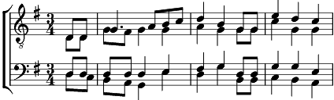

Refrain:
Quand je pense à toi mon père
Je te vois paysan cultiver notre terre
Travailler dans les champs
Quand je pense à toi mon père
Je te vois sur le banc
Récitant ta prière
Au matin levant
1. Je te vois là-bas sur la dune
Labourer ton jardin
Une odeur de grand feu qui fume
Le long du vieux chemin
Au vent frais du matin de printemps redonné
Tu bâtis ton bonheur
Refrain
2. Je te vois là-bas sur la chaise blanche
A l'ombre des bouleaux
C'est encore un joyeux dimanche
Pour un peu de repos
Et la douce chanson d'un oiseau de l'été
Te remplit de bonheur
Refrain
3. Je te vois sur la route en pierres
Creuser longtemps longtemps
Le front tout jauni de poussière
Las, mais le cœur content
Dans l'humide moiteur d'un automne essoufflé
Tu construit ton bonheur
Refrain